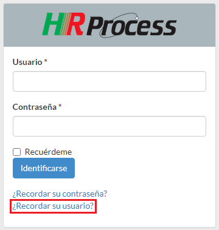

Importante
Importante: El sistema puede tener evoluciones, instalación parcial de módulos, motivo por el cual las imágenes y/o descripciones del presente manual pueden ser diferentes.
Primeros pasos
Ingreso al sistema
Esta pantalla será la que visualizará al ingresar al sistema.
Aquí el usuario deberá completar el “usuario” y la “contraseña” que le hayan asignado inicialmente y dar “Clic” en el botón “Identificarse”.
Colaborador olvidó el Usuario

Al visualizar la pantalla de Ingreso al Sistema deberá dar clic en recordar su usuario, le solicitará su mail cargado en el sistema en una pantalla como la siguiente.

Luego de dar introducir se correo, deberá dar Clic en Enviar le devolverá la siguiente pantalla, donde le indica que le enviará un mail con su usuario.

Recibirá el siguiente mail en su Bandeja de entrada, donde le indica su usuario y un link para ingresar al sistema.

Colaborador olvidó la clave
Al visualizar la pantalla de Ingreso al Sistema deberá dar clic en recordar su contraseña, le solicitará su mail cargado en el sistema en una pantalla como la siguiente:

Recibirá la siguiente pantalla, donde le indica que le será enviado un mail con su código de verificación y le deja una pantalla como la siguiente para introducir el código de verificación, que le será enviado por mail.


En este mail tiene el código de verificación que lo puede copiar y pegar en la ventana anterior o directamente dar Clic en el link y le abrirá la ventana clon el código de verificación insertado, ahí deberá completar su usuario y dar Clic en "Enviar".

Visualizará la siguiente pantalla, donde le solicitará una nueva contraseña y la verificación de la misma.
Luego de enviarla se desplegará la pantalla del sistema para ingresar con su usuario y nueva contraseña.
Primer ingreso al sistema
En el primer ingreso al sistema se desplegará la siguiente pantalla:

Deberá completar los campos:
- Contraseña
- Confirme la contraseña
- Dar “Clic” sobre el párrafo “Acepto los Términos y Condiciones” (leerlos).
- Dar “Clic” en el casillero a la izquierda del párrafo “Acepto los Términos y Condiciones” para que se complete la tilde
- Dar “Clic” en el botón “Enviar” y recordar la contraseña registrada.
En el caso de no completar correctamente los campos solicitados el sistema le devolverá un mensaje indicando los errores ejemplo:
Una vez completada la información correctamente el sistema le devolverá la siguiente pantalla:

En ella deberá dar “Clic” sobre el botón “Ir a Inicio” y podrá comenzar a navegar por el sistema, con las funciones habilitadas a su perfil.
A partir de estas validaciones la pantalla que se desplegará al ingresar al sistema es la siguiente.

Sobre la izquierda de la pantalla están las funciones que se pueden realizar:
Mis datos (Datos personales)

Con esta función se pueden actualizar los datos personales, para ello existen 2 solapas que se detallan brevemente a continuación:
General

Adicionalmente, desde esta solapa se puede cambiar la contraseña, si fuera necesario.
Organización
En todas las solapas, al finalizar los cambios deberá dar “Clic” sobre el botón “Guardar cambios” si desea que los mismos sean conservados, en el caso de no realizar cambios o no querer conservarlos dar “Clic” sobre el botón “Volver”.
La pantalla de Organización es solamente informativa.